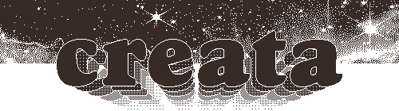
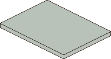
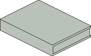
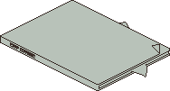

welcome to the creata page! this is a collection of (1) links to my projects and (2) funny little secrets i can put on a page like this.
it works just like a regular desktop, so drag things around and peek in some folders.